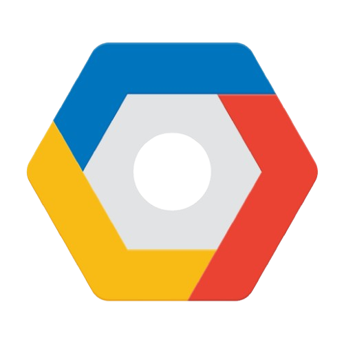
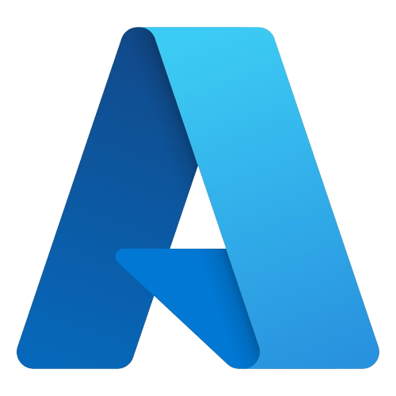

Cloud
L'excellence de la Data Science pour un développement incontesté.
GCP

GCP est une plateforme cloud puissante qui accélère la transformation digitale des organisations. Elle offre une suite complète de services pour stocker, analyser et valoriser les données à grande échelle. Grâce à son infrastructure mondiale, elle garantit performance, sécurité et haute disponibilité. Les outils d’IA et de machine learning intégrés permettent d’innover plus rapidement. Avec GCP, les entreprises disposent d’un environnement agile pour bâtir des solutions modernes et évolutives.
AWS
AWS est une plateforme cloud complète qui accompagne les entreprises dans leurs projets les plus ambitieux. Elle propose une large gamme de services pour exploiter, sécuriser et automatiser les environnements data. Son infrastructure mondiale assure une performance optimale et une disponibilité constante. Grâce à ses outils avancés d’IA, d’analytique et de DevOps, AWS accélère l’innovation. Avec AWS, les organisations disposent d’un cloud robuste, flexible et conçu pour évoluer sans limites.
Azure
